Aufgabe 7
Berechnen Sie das Volumen V des dargestellten Prismas.

Wie löse ich Matheaufgaben?
Volumen
Aufgabe 1 Welches Volumen V und welche Oberfläche O hat ein Würfel mit der Seitenlänge a = 3 cm?
Aufgabe 2 Welche Seitenlänge a hat ein Würfel a) mit dem Volumen V = 64 cm3? b) mit der Oberfläche = 150 cm2? b) a = cm
Aufgabe 3 Ein Prisma hat einen Umfang U der Grundfläche von 56,8 dm, eine Höhe h von 9,5 dm und eine Grundfläche G von 94,5 dm2. Wie groß sind die Mantelfläche M und die Oberfläche O?
Aufgabe 4 Ein Prisma hat eine Grundfläche G von 63,8 cm2, eine Höhe h von 22,5 cm und eine Mantelfläche M von 518,75 cm2. Wie groß sind die Oberfläche O und der Umfang U der Grundfläche? U = cm
Aufgabe 5 Ein Prisma hat eine Oberfläche O von 54,63 cm2, eine Mantelfläche M von 36,83 cm2 und einen Umfang U der Grundfläche von 6,35 cm. Wie groß sind die Grundläche G und die Höhe h?
Aufgabe 6 Ein Prisma hat eine Oberfläche O von 1225 cm2, eine Höhe h von 23 cm und einen Umfang U der Grundfläche von 42 cm. Wie groß sind die Grundläche G und die Mantelfläche M? M = cm2
Aufgabe 7 Berechnen Sie das Volumen V des dargestellten Prismas.
Aufgabe 8 Berechnen Sie das Volumen V des dargestellten Prismas.
V = cm3
Aufgabe 9 Berechnen Sie die Höhe h eines Prismas mit dem Volumen V = 180,7 dm3 und einer Grundfläche G = 27,8 dm2.
Aufgabe 10 Berechnen Sie das Volumen V eines Prismas (Quaders) mit der Länge a = 4 cm, der Breite b = 3 cm und der Höhe h = 70 mm. V = cm3
Aufgabe 11 Berechnen Sie das Volumen V eines Prismas (Quaders) mit der Länge a = 15 cm, der Breite b = 85 cm und der Höhe h = 9 dm.
Aufgabe 12 Berechnen Sie das Volumen V eines Prismas (Quaders) mit der Länge a = 2,7 dm, der Breite b = 9,3 cm und der Höhe h = 85 mm. V = cm3
Aufgabe 13 Berechnen Sie das Volumen V eines Dreieckprismas mit der Gesamtlänge l = 5,3 cm, der Grundseite des Dreiecks a = 60 mm und der Höhe des Dreiecks h = 1,7 cm.
Aufgabe 14 Berechnen Sie das Volumen V eines rechtwinkligen Dreieckprismas mit der Gesamtlänge l = 5,3 cm und der Länge der Katheten a = 45 mm und b = 2,5 cm. V = dm3
Aufgabe 15 Berechnen Sie die Oberfläche O eines rechtwinkligen Dreieckprismas mit der Gesamtlänge l = 4 cm und der Länge der Katheten a und b = 2,5 cm.
Aufgabe 16 Berechnen Sie das Volumen V des dargestellten Körpers. 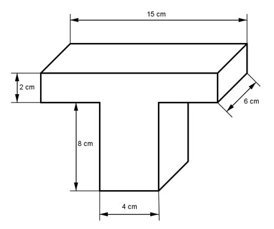 V = cm3
Aufgabe 17 Berechnen Sie das Volumen V des dargestellten Körpers. 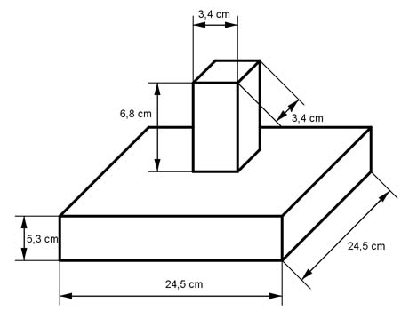
Aufgabe 18 Berechnen Sie das Volumen V des dargestellten Körpers. 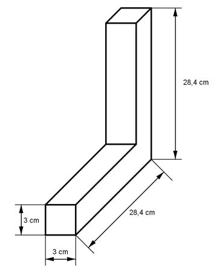 V = cm3
Aufgabe 19 Berechnen Sie das Volumen V des dargestellten Körpers. 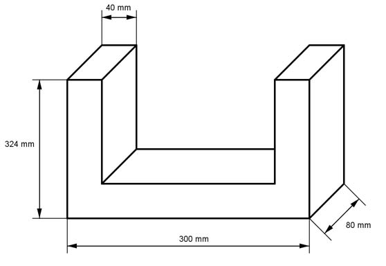
Aufgabe 20 Berechnen Sie das Volumen V des dargestellten Körpers. 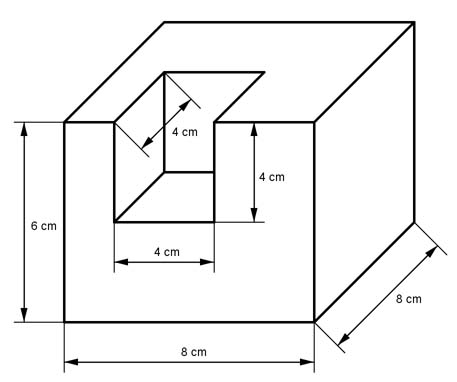 V = dm3
Aufgabe 21 Berechnen Sie das Volumen V des dargestellten Körpers. 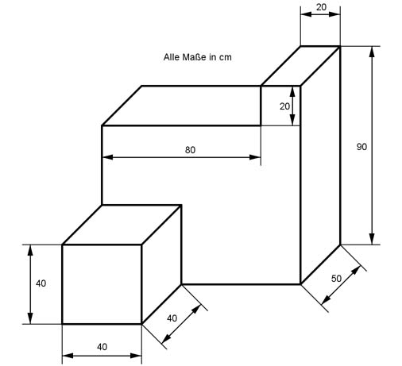
Aufgabe 22 Ein Zylinder hat einen Radius r von 2 m und eine Höhe h von 3 cm. Wie groß ist sein Volumen V? V = cm3
Aufgabe 23 Ein Zylinder hat einen Durchmesser d von 4,8 cm und eine Höhe h von 5 cm. Wie groß ist sein Volumen V?
Aufgabe 24 Ein Zylinder hat einen Grundfläche G von 70 cm² und eine Höhe h von 8 cm. Wie groß ist a) sein Durchmesser d, b) sein Volumen V? d = cm
Aufgabe 25 Berechnen Sie das Volumen V des dargestellten Körpers. 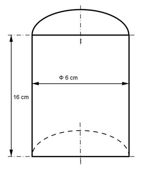
Aufgabe 26 Berechnen Sie das Volumen V des dargestellten Körpers. 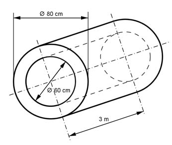 V = cm3
Aufgabe 27 Berechnen Sie das Volumen V und die Oberfläche O des dargestellten Körpers.

Aufgabe 28 Berechnen Sie das Volumen V des dargestellten Körpers. 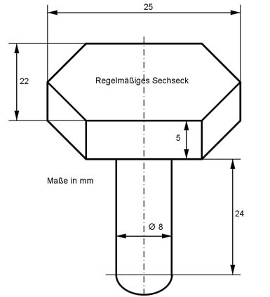 V = mm3
Aufgabe 29 Berechnen Sie die Oberfläche O eines quadratischen Prismas mit einer Grundfläche G = 25 cm2 und einer Länge l von 13 cm.
Aufgabe 30 Ein Würfel hat eine Gesamtseitenlänge L von 72 cm. Wie groß sind sein Volumen V und seine Oberfläche O? V = cm3
Aufgabe 31 Ein Prisma hat eine quadratische Grundfläche mit einem Umfang von 12 cm und einer Höhe von 8 cm. Wie groß sind sein Volumen V und seine Oberfläche O?
Aufgabe 32 Berechnen Sie die Masse m eines Zylinders mit r = 2 cm,h = 15 cm und ρ = 7,85 g/cm3. m = g
Aufgabe 33 Berechnen Sie die Masse m eines Zylinders mit r = 7,5 cm, h = 65 cm und ρ = 2,7 kg/dm3.
Aufgabe 34 Berechnen Sie die Masse m eines Zylinders mit d = 12 mm,h = 27 mm und ρ = 10,5 kg/dm3. m = kg
Aufgabe 35 Berechnen Sie die Masse m eines Zylinders mit d = 1,4 m,h = 8,6 m und ρ = 2,4 t/m3.
Aufgabe 36 Ein Zylinder hat ein Volumen V von 200 cm3 und eine Höhe h von 5 cm. Wie groß ist sein Radius r? r = cm
Aufgabe 37 Ein Zylinder hat ein Volumen V von 176 cm3 und einen Radius r von 4,5 cm. Wie groß ist seine Höhe h?
Aufgabe 38 Ein Zylinder hat eine Mantelfläche M von 83,9 cm2 und einen Radius r von 3,8 cm. Wie groß sind seine Höhe h und sein Volumen V? h = cm
Aufgabe 39 Ein Zylinder hat eine Mantelfläche M von 246,8 cm² und eine Höhe h von 27 cm. Wie groß sind seine Oberfläche O und sein Volumen V?
Aufgabe 40 Berechnen Sie das Volumen V und die Oberfläche O des dargestellten Körpers. 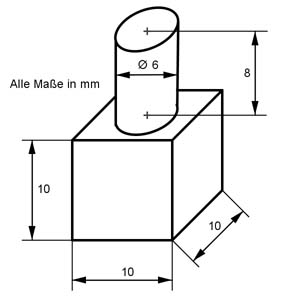 V = mm3
Aufgabe 41 Berechnen Sie das Volumen V und die Oberfläche O des dargestellten Körpers. 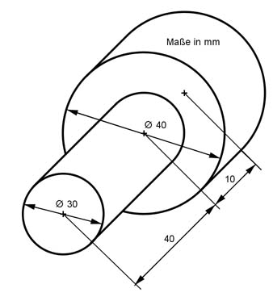
Aufgabe 42 Berechnen Sie die Masse m des Körpers mit einer Dichte ρ von 8,9 g/cm3.
m = g
Aufgabe 43 Berechnen Sie die Masse m des Körpers mit einer Dichte ρ von 2,7 kg/dm3.

Aufgabe 44 Berechnen Sie die Masse m des Körpers mit einer Dichte ρ von 7,8 g/cm3. 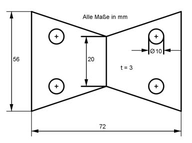 m = g
Aufgabe 45 Ein Zylinder hat einen Radius r von 4 cm und eine Höhe h von 6 cm. Wie groß ist seine Oberfläche O?
Aufgabe 46 Ein Zylinder hat ein Volumen V von 17 cm3 und einen Radius r von 2 cm. Wie groß sind seine Oberfläche O und seine Mantelfläche M? M = cm2
Aufgabe 47 Ein Zylinder hat ein Volumen V von 70 cm3 und eine Höhe h von 5 cm. Wie groß sind seine Oberfläche O und seine Mantelfläche M?
Aufgabe 48 Ein Zylinder hat eine Oberfläche O von 91 m2 und einen Radius r von 3 m. Wie groß sind seine Mantelfläche M und sein Volumen V? V = m3
Aufgabe 49 Berechnen Sie das Volumen V und die Oberfläche O des dargestellten Körpers. 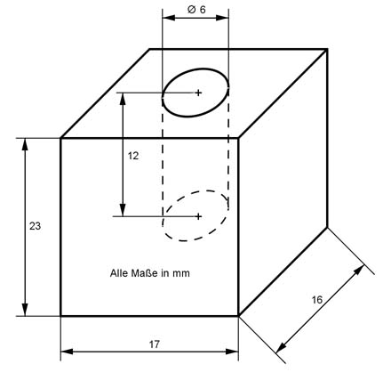
Aufgabe 50 Berechnen Sie das Volumen V und die Oberfläche O des dargestellten Körpers. 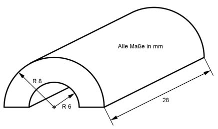 O = mm2
Aufgabe 51 Berechnen Sie das Volumen V eines Prismas mit einer Höhe h von 5 cm und einem gleichseitigen Dreieck mit einer Seitenlänge a von 4 cm als Grundfläche.
Aufgabe 52 Berechnen Sie das Volumen V eines Prismas mit einer Höhe h von 5 cm und einem regelmäßigen Sechseck mit einer Seitenlänge a von 3 cm als Grundfläche. V = cm3
Aufgabe 53 Berechnen Sie das Volumen V eines Prismas mit einer Höhe h von 5 cm und einem regelmäßigen Achteck mit einer Seitenlänge a von 2,5 cm als Grundfläche.
Aufgabe 54 Berechnen Sie das Volumen V eines Prismas mit einer Höhe h von 5 cm und einem regelmäßigen Fünfeck mit einer Seitenlänge a von 3,2 cm als Grundfläche. V = cm3
Aufgabe 55 Berechnen Sie das Volumen V und die Oberfläche O des dargestellten Prismas. 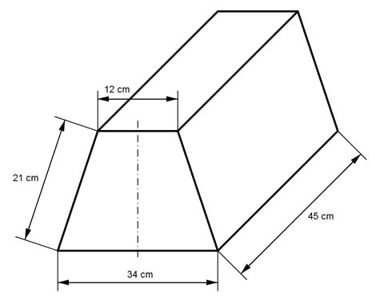
Aufgabe 56 Berechnen Sie das Volumen V und die Oberfläche O des dargestellten Körpers. 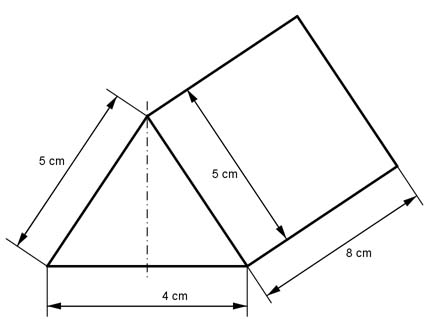 O = cm2
Aufgabe 57 Ein Zylinder hat einen Umfang U von 46,8 cm und eine Höheh von 12,3 cm. Wie groß sind seine Oberfläche O und seine Mantelfläche M?
Aufgabe 58 Ein Zylinder hat ein Volumen V von 15,7 dm3. Seine Höhe h und der Radius r stehen im Verhältnis 5 : 2. Wie groß sind seine Höhe h und seine Oberfläche O? h = dm
Aufgabe 59 Ein Zylinder hat eine Oberfläche O von 356 cm3. Seine Höhe h und der Radius r stehen im Verhältnis 5 : 3. Wie groß ist sein Volumen V?
Aufgabe 60 Ein Würfel hat eine Masse von 655 g und eine Dichte von 7,85 g/cm3. Wie groß ist eine Seite a? a = cm
Aufgabe 61 Wie groß ist die Masse m des dargestellten Körpers, wenn seine Dichte 7,1 g/cm3 beträgt? 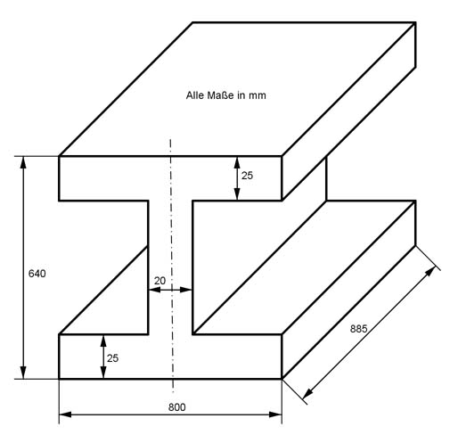
Aufgabe 62 Berechnen Sie das Volumen V und die Oberfläche O des dargestellten symmetrischen Körpers. Alle Maße in mm. 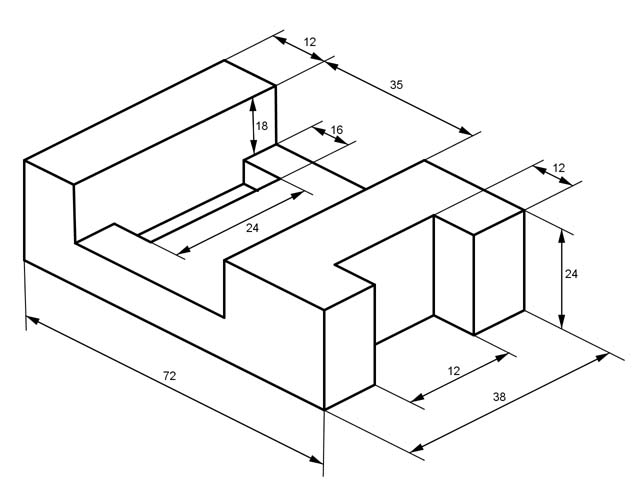 O = cm2
Aufgabe 63 Die Seiten eines Rechteckprismas (Quaders) verhalten sichwie a : b : c = 1 : 3 : 5.. Wie groß sind sein Volumen V und seine Oberfläche O, wenn b = 18 cm lang ist?
Aufgabe 64 Ein Quader hat eine Seite mit 5 cm und eine andere mit 2 cm. Wie groß muss die dritte Seite c sein, wenn die Oberfläche des Quaders gleich groß sein soll wie die Oberfläche eines Würfels mit einer Seitenlänge von 5 cm? Sie muss cm lang sein.
Aufgabe 65 Ein quadratisches Prisma hat eine Seite von 36 cm und eine Länge von 62 cm. Ein Rechteckprisma soll gleiches Volumen und gleiche Länge haben. Wie lang ist die andere Rechteckseite, wenn die eine 5,5 cm lang ist?
Aufgabe 66 Rechteckprisma hat die Maße 28 mm x 24 mm x 140 mm. Ein quadratisches Prisma soll gleiches Volumen und gleiche Länge haben. Wie lang ist eine Quadratseite? Sie ist cm lang.
Aufgabe 67 Ein regelmäßiges dreiseitiges Prisma hat eine Oberfläche O von 20 cm² und eine Seitenlänge a von 2 cm. Wie groß ist seine Länge l?
Aufgabe 68 Ein Zylinder hat ein Volumen V von 100 cm³ und eine Höhe h von 5 cm. Wie groß ist sein Durchmesser d? d = cm
Aufgabe 69 Ein Zylinder wird in der Mitte der Länge nach durchgeschnitten. Die Schnittfläche ist ein Quadrat mit der Seite a = 4 cm. Wie groß sind das Volumen V und die Oberfläche O des Zylinders?
Aufgabe 70 Der Radius r und die Höhe h eines Zylinders verhalten sich wie 3 : 5. Wie groß sind das Volumen V und die Mantelfläche M, wenn r = 2 cm? M = cm2
Aufgabe 71 Wie groß ist das Volumen V eines Zylinders, wenn seine Mantelfläche M = 100 cm2 und seine Höhe h = 10 cm betragen?
Aufgabe 72 Ein Zylinder hat einen Radius r₁ von 5 cm und eine Höhe h1 von 8 cm. Er soll einem zweiten volumengleich sein, dessen Radius r2 und Höhe h2 sich wie 3 : 5 verhalten. Wie groß sind r2 und h2? h2 = cm
Aufgabe 73 Das Volumen eines Hohlzylinders ist so groß wie sein Innenvolumen. Drücken Sie den Außenradius r1 durch den Innenradius r2 aus.
Aufgabe 74 Das Volumen eines Hohlzylinders ist so groß wie sein Innenvolumen. Drücken Sie die Mantelfläche des Hohlzylinders M1 durch die Mantelfläche innen M2 aus. M1 = M2 * (√2 + )
Aufgabe 75 Ein Hohlzylinder hat ein Volumen V von 20 cm3, eine Mantelfläche M von 40 cm2² und eine Höhe h von 4 cm. Wie groß sind sein Außenradius r1 und sein Innenradius r2?
Aufgabe 76 Ein Hohlzylinder hat einen Außenradius r1 von 3 cm und einen Innenradius r2₂ von 2 cm. Wie groß ist der Radius r eines Zylinders mit gleichen Volumen und gleicher Höhe? r = cm
Aufgabe 77 Die Radien r1 und r2 eines Hohlzylinders verhalten sich wie 4 : 3. Wie groß sind sein Volumen V und die Mantelfläche M, wenn r₁ = 4 cm und die Höhe h = 6 cm?
Aufgabe 78 Wie groß ist die Höhe h einer Raute, wenn ihre Seiten 8 cm lang sind und eine Diagonale 3 cm? h = cm
Aufgabe 79 Wie groß ist die Höhe h einer Raute, wenn ihre Fläche 16 cm² beträgt und ihre Seiten 6 cm?
Aufgabe 80 Die Diagonalen eines rechteckigen Platzes sind 43 m lang und schließen Winkel von 60° bzw. 120° ein. Wie lang sind die Rechteckseiten? Längere Seite = m.
Aufgabe 81 Wie groß ist die Fläche A des Profilstahls?

Aufgabe 82 Aus einem Baumstamm soll ein rechteckiges Kantholz mit den Maßen 5 cm und 12 cm hergestellt werden. Welchen Durchmesser d muss der Stamm haben? d = cm
Aufgabe 83 Wie groß ist der Inkreisradius einer Raute, deren Diagonalen 52 mm und 88 mm lang sind?
Aufgabe 84 Wie groß sind b, d, l, u und v? 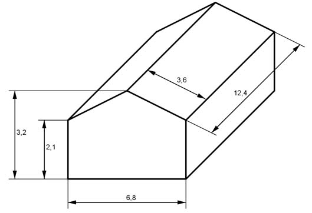 l = cm
Aufgabe 85 Die Basis eines gleichschenkligen Dreiecks ist 6 cm, ein Schenkel 8 cm lang. Wie groß ist seine Fläche A, wenn ein 1 cm breiter Streifen parallel zu einem Schenkel abgeschnitten wird?
Aufgabe 86 Wie lang ist d?
d = cm
Aufgabe 87 Wie groß ist die Fläche A des Trapezes?

Aufgabe 88 Wie groß muss man h₁ machen, damit das gleichschenklige Dreieck halbiert wird?
h1 = cm
Aufgabe 89 Wie groß ist die Fläche A des schraffierten gleichschenkligen Trapezes, das in einem gleichseitigen Dreieck mit dem Umkreisradius r = 6 cm liegt?

Aufgabe 90 Wie groß muss h sein, wenn sich die Fläche des Trapezes zur Fläche des darüberliegenden Dreiecks wie 3 : 2 verhält?
h = cm
Aufgabe 91 Wie groß sind g1 und g2 von dem gleichschenkligen Trapez?

Aufgabe 92 Berechnen Sie die Höhe h, die Diagonale d und die Seite a des gleichschenkligen Trapezes.
d = cm
Aufgabe 93 Ein Trapez mit einer Mittellinie von 6 cm und einer Höhe von 4 cm soll einem gleichseitigen Dreieck flächengleich sein. Berechnen Sie die Länge a einer Dreieckseite und das Verhältnis der beiden Höhen.
Aufgabe 94 Berechnen Sie die Länge der Grundseite g₁ und der Seite b.
b = cm
Aufgabe 95 Ein gleichschenkliges Dreieck ist 12 cm hoch. Es soll durch parallel verlaufende Teilstriche in 3 gleich große Flächen unterteilt werden. In welchen Höhen verlaufen die Teilstriche?
Aufgabe 96 Ein Rechteck ist 4 cm breit und 13 cm lang. Es soll so zerteilt werden, dass zwei Trapeze entstehen, deren Grundseiten 4 cm und 9 cm lang sind. Wie lang ist die Schnittlinie l? l = cm
Aufgabe 97 Von einem gleichschenkligen Trapez sei die eine parallele Seite zweimal und die andere dreimal so groß wie der Schenkel mit 3 cm. Wie groß sind der Umfang U und die Fläche A des Trapezes?